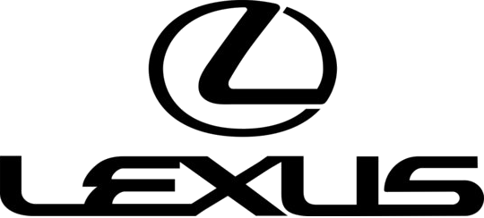
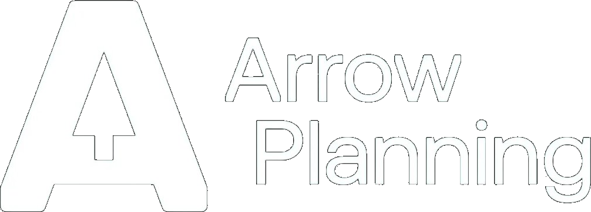

For the one comparing
You're weighing ways to get help. Weigh this one properly.
What the practice is, plainly stated, so it can be compared on its merits.
By now you have named the thing and decided it deserves outside help, which already puts you past the point where most people stall. You are probably holding a few options: a consultant, a course, a peer group, one or two coaches, perhaps the option of managing on alone a while longer. This page sets out what this practice is and is not, so you can judge the fit. No case will be pressed. You are assessing John; John is also assessing whether he can genuinely help you. Both answers have to come out yes.
The work: one session, at a board.
You arrive. The board is empty. You start with whatever is actually live for you, and you think it through together, out loud, until it is clear. John is not there to watch you work. He is the other mind in the room, asking the question you had stopped asking, catching the thing you have gone blind to because you see it every day.
Sometimes that takes an hour. Sometimes three. The work is finished when the question is answered, the next move is clear, the decision made.
Your thinking, out of your head, onto the board, into a solution.
What it is not: advice, or consulting.
A consultant studies your situation and hands you their answer; you rent their conclusions. Advice is someone else's pattern, offered across a table. Both have their place, and for some problems they are exactly right.
This is a different instrument. The conclusions are yours, arrived at out loud, with someone whose whole job is the quality of your thinking rather than the ownership of the answer. For questions where you are the one who has to believe the answer, and live inside it, and defend it in twelve months, that difference is the whole point.
Practically, it also means: no reports, no decks, no homework between sessions. The thinking happens at the board, not in the gaps.
Three shapes the work takes.
-
i.
LeadStrong
For directors, VPs and executives navigating organisations they don't own. Built around the gap between the decisions you are making and the thinking those decisions deserve: the promotion happens, the remit expands, and you are still deciding in the same fifteen-minute windows. A sustained thinking partnership, session by session, on whatever altitude the week presents.
-
ii.
BuildStrong
For founders, MDs and owners building the thing they lead. The business needs you in the strategic seat, the operational seat and the founder seat, and there is no time to sit properly in any of them. Sessions happen when the business needs them, and the work moves between altitudes because an owner's work does.
-
iii.
TeamStrong
For the leader who needs the team to think with them, not just receive what has already been thought. Runs over twelve weeks in two phases: individual CliftonStrengths work with each team member first, then group sessions on the real strategic questions in front of the team. The structure is the structure; the work inside it is yours.
What's behind the work.
- 15+ years with senior leaders Organisational consulting and executive coaching across plc, private and entrepreneurial contexts. Two careers, one practice.
- Gallup-certified CliftonStrengths coach The most-used talent assessment in the world, used by more than 90% of the Fortune 500. Applied here as an operating language, not a personality test.
- FITT16 practitioner A 16-archetype model built from the CliftonStrengths Full 34. It maps the drive underneath the strengths, so the strategy fits the leader, not just the role.
- Multi-year retained relationships Most engagements run for years. Not because the leader is stuck, but because the thinking partnership compounds.
Organisations and leaders worked with






Individual leaders coached from AWS, Bassett Mechanical, Volkswagen Financial Services and Nexans, among others, across industries and countries.
From people who've worked this way.
It takes a real weight off my shoulders. The pressure and expectation isn't solely on me. I'm not standing there having to find a way through these problems alone. John leads me through them, then comes in and helps me actually activate them within the team, creating solutions that set the standard for the future.
Mark Schmull · MD, Arrow Planning
Working with John has given me renewed focus and confidence at a point in my career when I really needed it. The CliftonStrengths work was the most clarifying thing I've done professionally.
Martin Malins · Senior Leader
I just wish I'd met John years ago. The frameworks he uses would have saved me from expensive mistakes in two previous businesses.
Stuart Ploughman · Serial Entrepreneur
The honest test
The fastest way to compare is an hour at the board.
Not a discovery call, and not a pitch. A full session, the same work John does with anyone at the board. You bring what is live, you think it through together, and you leave with a real conclusion, not a summary of what you could buy. If it turns out to be a fit, you will both know. If it doesn't, you have still spent a genuinely useful hour. Either way, the hour is yours.
Prefer to write first? coach@catalystgrowthcoach.co.uk. Replies come within one working day.
Not ready to sit down with anyone yet? An Hour at the Board, On Your Own is free, whole and self-guided, and The Considered Leader arrives weekly on LinkedIn and sells nothing. Both remain the better choice until you are.
Already decided? There is a shorter page: what happens next.